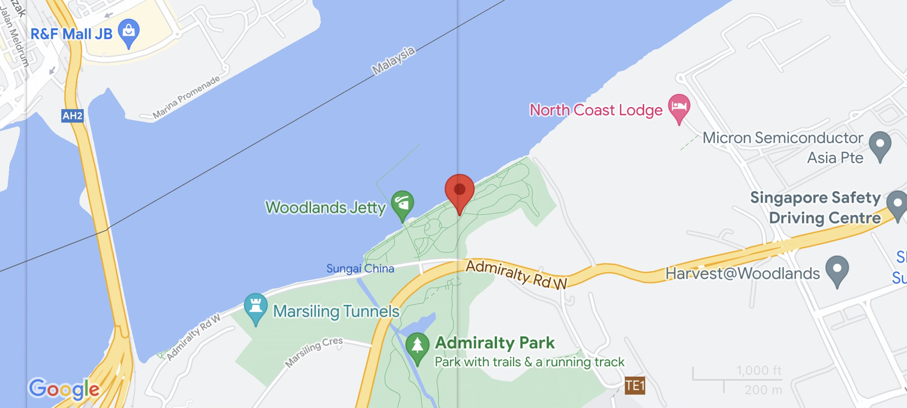

Park Information

Get as close as you can to our neighbouring country Malaysia at
Woodlands Waterfront! Located in the north of Singapore, the park is
situated at the edge of Singapore, making it the furthest point away
from the mainland. The 11-hectare park houses a variety of equipments
that cater to the young and old, ideal for recreational activities and
family bonding.
Things To Do


Enjoy scenery
Catch amazing views of the sunset/sunrise
Family bonding
Experience a Singaporean version of ninja warrior at the
multigenerational playground
Dining
Try some amazing seafood along with exquisite views at the Rasa
Istimewa Restaurant


Fishing
Try fishing for a hobby at Singapore’s longest jetty
Exercise
Exercise or workout with a view along the 1.5km Waterfront
promenade
Wildlife
Get up close with the wide variety of flora and fauna living in
woodlands Waterfront
How To Get There

Bus Service:
856 from Yishun or Woodlands Interchange